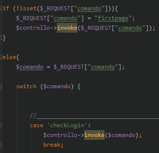
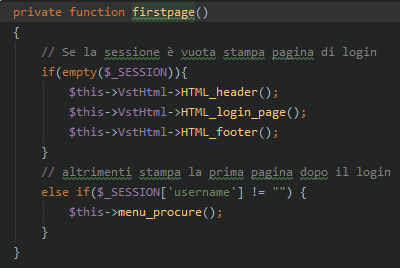
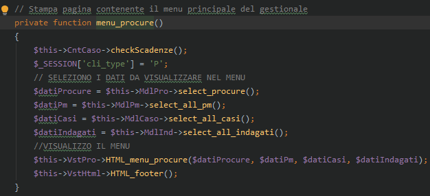
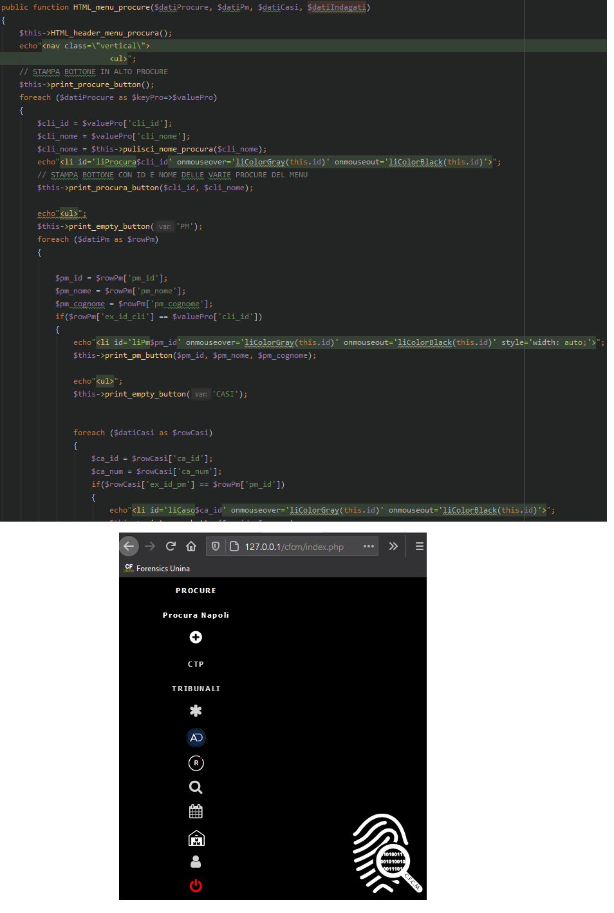
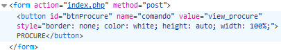
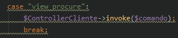
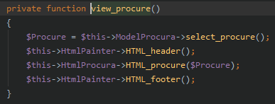

Flusso di esecuzione
La web application è stata strutturata seguendo una logica MVC (Model View Controller).
I files relativi ai model, controller e view sono presenti nelle rispettive directory /Modello, /Controllo e /Vista.
Le classi presenti in /Modello si occupano degli inserimenti, modifiche, eliminazioni dal DB.
Le classi presenti in /Controllo si occupano della logica di esecuzione.
Le classi presenti in /Vista si occupano della visualizzazione delle pagine / rappresentazione grafica dei dati.
Il file index.php fa da "router" per indirizzare il flusso di esecuzione alle giuste classi e funzioni.
Di seguito viene illustrato; tramite degli esempi di ipotetico utilizzo dell'applicativo; come comprendere il flusso di esecuzione della web app.
1° Step: da browser recarsi all'indirizzo localhost/cfcm oppure indirizzo-server/cfcm
Viene interpretato ed eseguito il file index.php
Al primo accesso la variabile globale$_REQUEST["comando"]non è settata; quindi viene settata automaticamente con il valorefirstpageper condurre alla pagina di login.
A questo punto viene invocato il controller istanziato da codice con$controllo = new Controllo();nella variabile$controlloIndex.php
2° Step: a questo punto data l'invocazione precedente del controller, il flusso, passa al controller denominato
Controllo.phpche tramite uno switch-case va a selezionare la funzinoefirstpageper la stampa della pagina iniziale dell'applicativo.Controllo.php
Come si può apprendere dai commenti, in caso sia il primo accesso, allora stampa la pagina di login; altrimenti in caso l'accesso sia già stato eseguito e presente nel file di sessione relativo all'utente (posizionato da xampp nel path
C:\xampp\tmp) allora caricherà la pagina del menù iniziale.3° Step: ipotizziamo di essere già loggati e il flusso e venga quindi eseguita la porzione di codice in cui viene chiamata la funzione
menu_procure()Controllo.php
Come da commento nel codice, questa funzione visualizza il menù iniziale.
$_SESSION['cli_type]viene valorizzata con 'P' se il cliente è una procura, 'T' se è un tribunale, 'C' se è una CTP; questo perché serve a decidere quali valori assegnare ai tasti "indietro" e "home"Successivamente vengono selezionati i dati in opportuni array che vengono passati alla funzione di stampa del menù principale
HTML_menu_procure()HtmlProcura.php
4° Step: ipotizziamo di cliccare sulla voce "PROCURE" del menù principale.

Tramite lo strumento per sviluppatori del browser, accessibile con il tasto F12, possiamo analizzare la struttura del bottone "PROCURE" e capire dove sarà diretto il flusso di esecuzione quando sarà cliccato.Tramite i campi action, name e value è possibile direzionare il flusso di esecuzione.

Cliccando il bottone il flusso sarà direzionato sul file index.php in cui è presente lo switch-case che andrà a selezionare la voce view_procure che causerà l'invocazione del ControllerCliente a cui passerà il $comando che in questo caso contiene il valore view_procure.A questo punto il flusso passa in ControllerCliente.php che a sua volta tramite un suo switch-case andrà a selezionare la voce view_procure in cui sarà chiamata la funzione privata view_procure
A questo punto per poter visualizzare la lista delle procure; la funzione và a selezionare tutte le procure invocando la funzione select_procure() presente all'interno della classe ModelProcura. Una volta ottenuto il risultato sotto-forma di array-associativo
$Procure; questo sarà passato alla funzione di visualizzazione HTML_procure($Procure) che provvederà a stamparlo a video con le opportune formattazioni html
Di seguito uno schema riassuntivo del flusso di esecuzione: